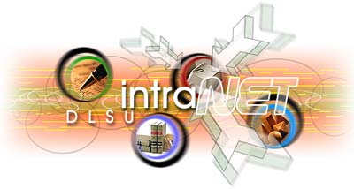

|
INTRANET
- The Relaunch!
by
Francis Mark D. Santos
The
Web Development Team (WDT) is gearing up for the third
edition of the DLSU Intranet. And this time,
the Intranet won't be the same old boring green pages you
see over and over again. The new color scheme is something
we haven't seen before and will be as exciting as a rollercoaster
ride. The web development team has been in the thick of
the action since last year's design stage. The intranet
will have tons of great pictures this time to complement
the important contents it provides to the users. Aside from
the improvements on the design, those static pages you used
to see will be replaced by active server pages for more
interactivity and easier navigation. And being template-driven,
these pages make content management and site redesign a
breeze in the future. The web development team is also planning
to make the designs of the DLSU Intranet to be seasonal,
which means it can have a Christmas-themed template from
December to November or a summer edition from March to May.
The
web development team is also coordinating closely with the
CFO in evaluating various third-party search engines that
will be used for the Intranet. The search engine will be
of great help to the users of the Intranet especially the
first-time users who are not yet familiar with it. Moreover,
the Help Desk will also help in bringing more audiences
to the Intranet by sending snipped versions of the various
memoranda through email which will be linked to the complete
version in the Policies section of the Intranet. These snipped
versions (two or three lines), will act as a teaser for
the users to visit the new Intranet and explore it fully.
Through this, the Intranet will reach to a greater number
of users especially those who are not yet familiar with
it.
Things
are cooking up in the My.LaSalle (MLS) portal by
Joie B. Alvarez/Francis Mark D. Santos
Even
before the start of School Year 2001-2002, the Information
Technology Center (ITC) has already conceptualized the
Internet portal named "My.LaSalle" (MLS).
Just exactly what is My.LaSalle all about? You can think
of it as 'convenience within your reach', your personal
conduit to all university information, and your personal
assistant in carrying out student-related transactions within
DLSU.
When
you access the My.LaSalle portal at http;//my.dlsu.edu.ph,
you will be asked to login to access your personal page.
MLS readily recognizes you as an active student and displays
the appropriate features or settings you can access. As
a student, you can activate your Internet account and/or
change password via the MLS page. No more taking the trip
to Gokongwei 306, just make sure you have your official
receipt on hand (but did you know that you can also do this
using the DLSU WISe?). You can also enlist in courses you
plan to enroll the following term. Enlistment schedules
are usually announced by the Registrar's Office via the
web, e-mail, or the DLSU-WISe. You can also open your emails
through the MLS portal. You can check your emails even from
an Internet café without the need to actually dial
up to the DLSU servers. And to top it all, you can already
enroll online! No more lining up at the Registrar's Office.
You can enroll anywhere on your scheduled period, in the
course and section you have enlisted in earlier, provided
it is still open. You can always view the actual count per
course and section. And if you have a school record that
needs to be cleared, you will be prompted by the system
before proceeding with your enrollment.
What's
more? After upgrading to a new and more powerful server
to accommodate more users and minimize downtime, new features
will be added in its existing roster of applications. The
most recent addition to the list is the online enrollment
for the Graduate School of Business (GSB) students
for the La Salle Green Hills and RCBC Plaza campuses.
Next
in line for deployment, is the University Clearance system.
The main program is already finished and further coordination
with the Discipline Office would make the system ready in
time for the third term. Online enrollment for Lasallian
Enrichment Alternative Program (LEAP) will also
be implemented in the MLS portal. LEAP classes are alternative
classes that are offered during the University Week. In
the future, elections for the Student Council and Batch
Representatives for each college can be done online as well.
After completing the MLS features for the students, MLS
for the DLSU faculty will soon be developed.
And
of course, MLS will be sporting a new design and an improved
user interface for ease of use. You can layout the MLS design
to cater to your youthful taste and make it more personalized.
Continue exploring the MLS portal. My.LaSalle is information
for you - how you want it and when you want it!
|